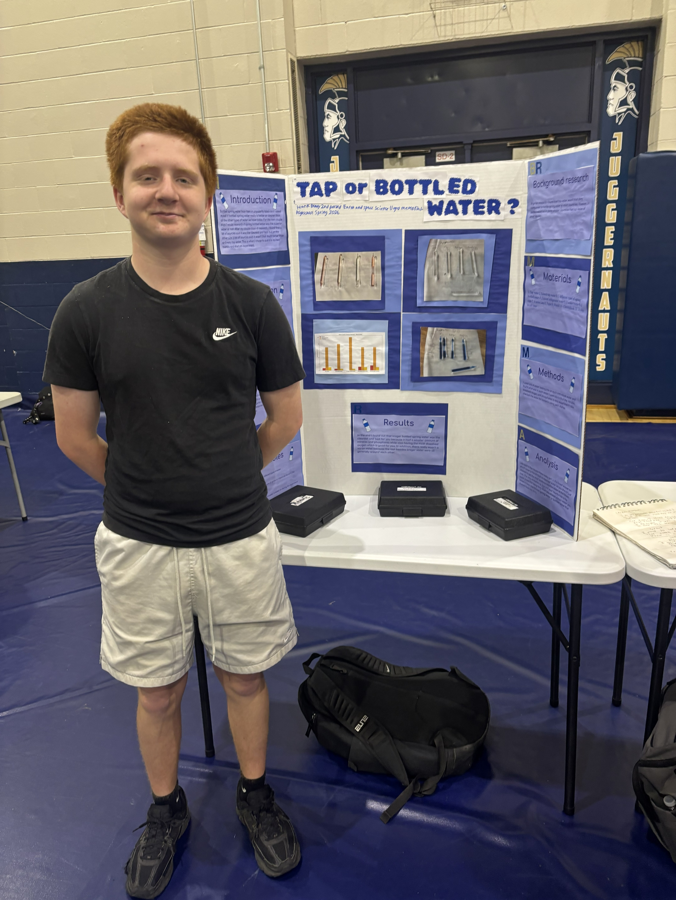

About me Visit the About Page
book highlights Visit the book highlights page
library programs and resources Visit the library programs and resources page
professional portfolio Visit the professional portfolio page
I have a passion for education. It is very important to my life. I have been teaching for over 22 years and a librarian for two. Mostly at Lloyd Memorial HS in Erlanger, KY.
Outside of education, I have two kids, two dogs, and two cats.

I am excited to earn my library cerificate shortly.